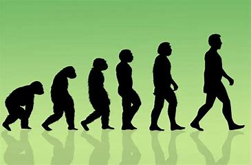
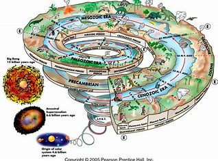
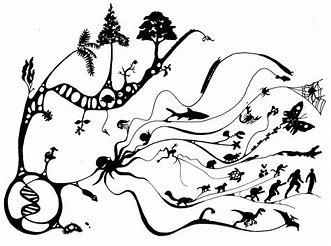
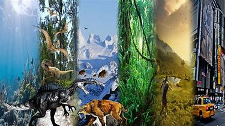
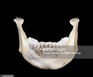
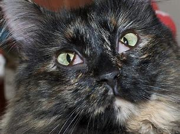
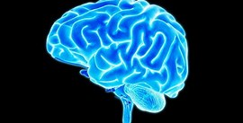
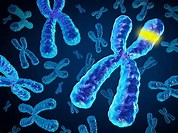

Human Evolution Facts

Teeth meant for grinding plants were designed for a bigger jaw.The big teeth at the back of the mouth were designed to grind the coarse plants that made up our ancestors’ diet. When our ancestors began to incorporate meat and cook their food, their jaws shrank, but the large molars, known as wisdom teeth, stuck around. However, some people are born without them, due to a special gene variant that determines whether or not a person will grow them.
HARMFUL: Wisdom teeth can crowd the other molars and cause infection, so they are often removed.
The third eyelid has no purpose
In the corner of the eye, near the nose, there is a small pinkish membrane, the remnant of something that once covered the eyeball like a curtain. This third eyelid, called the nictitating membrane, has now shrunk to negligible size in humans, although it still works in fish, reptiles, amphibians, birds and even some mammals. The often-transparent membrane is used to protect the eyes. For example, beavers dive with it drawn, and woodpeckers engage it to protect their eyes from flying wood chips when they are pecking at trees.
Scientists have found that the third eyelid grows rapidly in humans during early embryonic development, but stops while the eyeball continues to grow, leaving the membrane unable to cover it.
HARMLESS: Modern humans eyelids are sufficient to protect our eyes, but we still retain the vestiges of the third eyelid, which is useless, but also harmless.

Researchers from the University of Colorado have another theory as to why the human brain evolved so rapidly in size and complexity. These scientists found that a protein domain, which is a specific unit within a protein, occurs in greater numbers in humans than in other animals. The protein domain is DUF1220, and the more copies you have, the bigger your brain. Humans have 270 copies in their genome. Next highest are chimpanzees with 125 and gorillas with 99. Mice have only one copy. This means that brain size may depend greatly on the protein domain.
Humans share nearly 31 percent of their genes with the yeast, one living cell which replicates every 90 minutes. They also share about 50 percent of their genes with the banana.